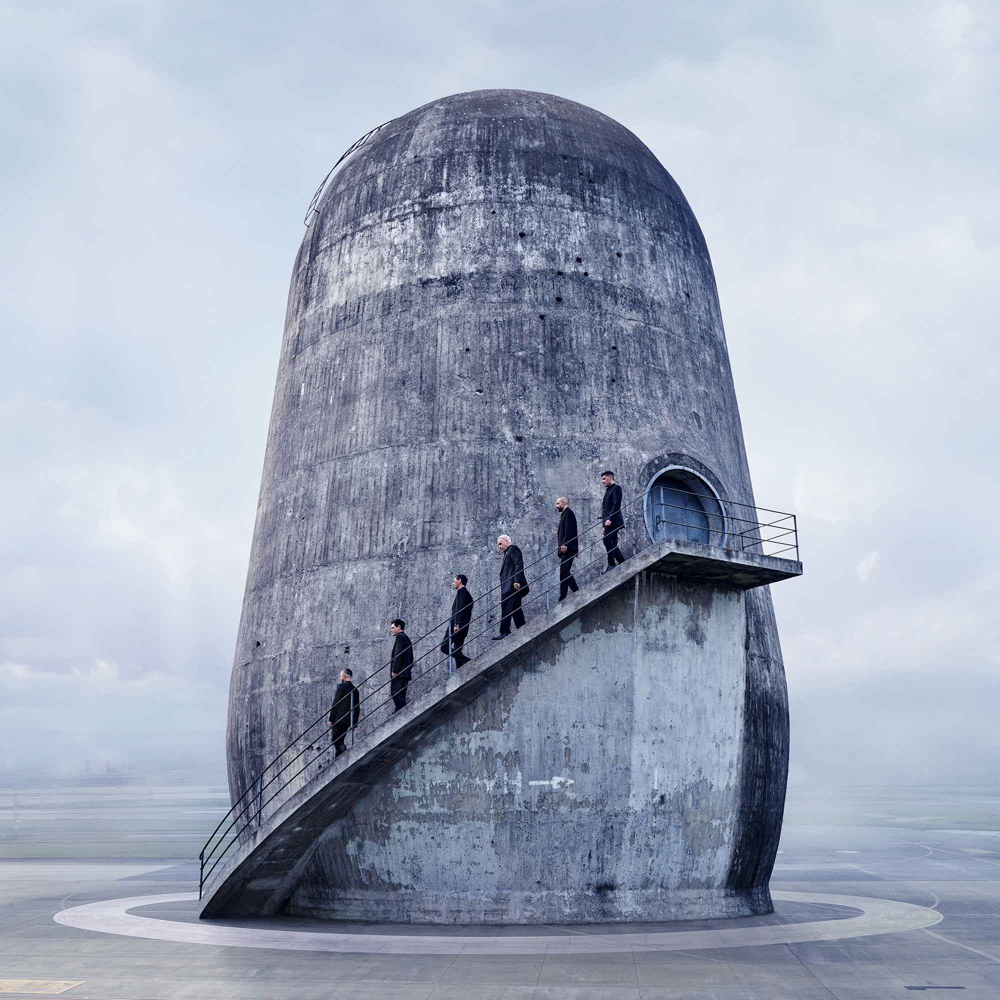
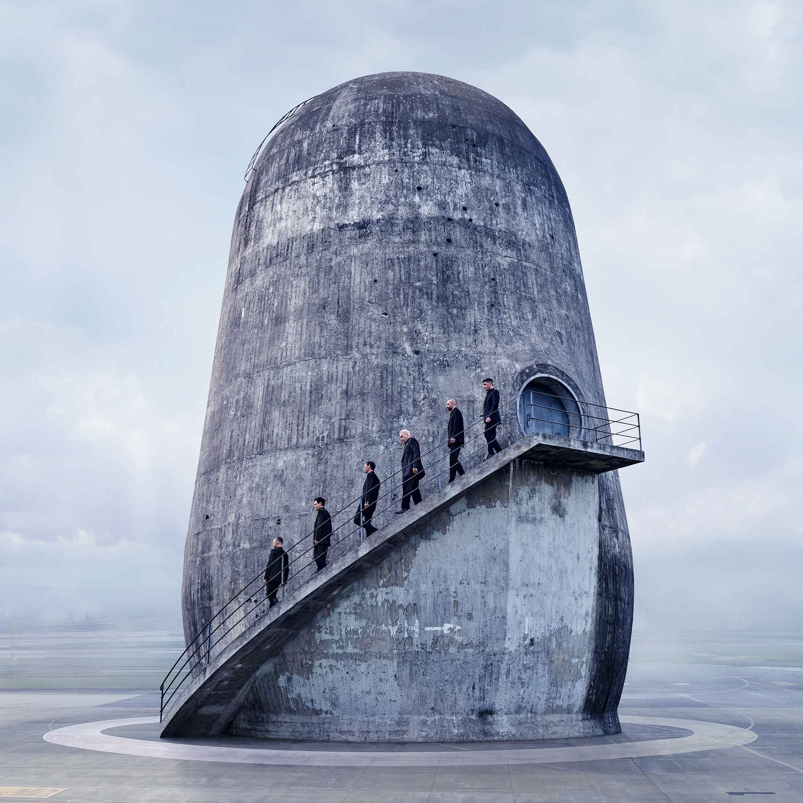

Rammstein was founded by guitarist Richard Z. Kruspe. In 1989, he escaped to West Berlin and started the band Orgasm Death Gimmicks. At that time, he was heavily influenced by American music, especially Kiss. After the Berlin Wall came down, he moved back home to Schwerin, where Till Lindemann worked as a basket-weaver, played drums in the band First Arsch. At this time, Richard lived with Oliver Riedel, of the band The Inchtabokatables, and Christoph "Doom" Schneider (of Die Firma). Richard realized that the music he had previously created did not properly suit him; He envisioned something that would combine machines and the sound of heavy guitars. The three started working together on a new project. Richard soon found it extremely difficult to write both music and lyrics at the same time, so he talked Lindemann into joining Rammstein. Richard first discovered Till when he overheard him singing while he was working.A contest was held in Berlin for amateur bands in 1994, the winner of which would receive the opportunity to record a four-track demo audiotape in a professional studio. Kruspe, Schneider, Riedel and Lindemann entered and won the contest, which caught the attention of Paul H. Landers, who wanted in on the project upon hearing their demo. To complete their sound, Rammstein then attempted to recruit Christian "Flake" Lorenz, who used to play with Landers in Feeling B. At first Lorenz was hesitant, but eventually agreed to join the band.
| Ticket Style | Ticket Price | Whole Amount |
|---|---|---|
| Standart | 100€ | 500 in Stock |
| Standart Plus | 180€ | 250 in Stock |
| VIP Plus | 350€ | 50 in Stock |

Enjoy
Rammstein began to record their first studio album entitled Herzeleid in March 1995 with producer Jacob Hellner. They released their first single Du riechst so gut on 17 August and later released the album on 24 September 1995. Later that same year, they toured with Clawfinger in Warsaw and Prague. Rammstein headlined a tour of their own through Germany from 2 December to 22 December consisting of 17 shows which helped to boost the band's popularity. They then went on several tours throughout early 1996, releasing their second single entitled Seemann on 8 January 1996.On 27 March, Rammstein performed on MTV's Hanging Out in London; their first performance in the UK. Rammstein's first major boost in popularity outside Germany came when music director Trent Reznor chose two Rammstein songs, Heirate mich and Rammstein, for David Lynch's film Lost Highway. The soundtrack for the film was released in the US in the fall of 1996 and later throughout Europe in April 1997.Rammstein then went on to tour through Germany, Austria and Switzerland from September to October 1996, performing an anniversary concert on 27 September called "100 years of Rammstein". Guests to the concert included Moby, Bobo and The Berlin Session Orchestra, Berlin director Gert Hof was responsible for the light show.